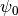
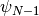
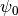
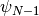
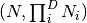
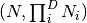
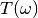

WaveFunction¶
About the WaveFunction class¶
The WaveBlocks Project
@author: R. Bourquin @copyright: Copyright (C) 2010, 2011, 2012, 2013, 2014, 2015, 2016 R. Bourquin @license: Modified BSD License
Inheritance diagram¶

Class documentation¶
-
class
WaveBlocksND.WaveFunction(parameters)[source]¶ This class represents a vector valued wavefunction
 as used in the vector valued time-dependent Schroedinger equation. The
state consists of the components  to
.
as used in the vector valued time-dependent Schroedinger equation. The
state consists of the components  to
.-
get_grid()[source]¶ Return the
Gridinstance representing the grid .
The wavefunction is evaluated on the grid nodes to get
.
The wavefunction is evaluated on the grid nodes to get  .
.
-
get_values(components=None, flat=None)[source]¶ Get the wavefunction values
 for each
component
for each
component  of .
of .Parameters: - components (A single integer or a list of integers. If set to
None(default) we return the data for all components.) – The components for which we want to get
the wavefunction values .
for which we want to get
the wavefunction values . - flat (Boolean or
None, default isNone.) – Whether to return the wavefunction with a hypercubic shape or a flat
 shape.
shape or a flat
 shape.
Returns: A list of the values
for all components .- components (A single integer or a list of integers. If set to
-
kinetic_energy(kinetic, summed=False)[source]¶ Calculate the kinetic energy
 of the different components .
of the different components .Parameters: - kinetic (A
KineticOperatorinstance.) – The kinetic energy operator . - summed – Whether to sum up the kinetic energies
 of the individual
components . Default is
of the individual
components . Default is False.
Returns: A list with the kinetic energies of the individual components or the overall kinetic energy of the wavefunction. (Depending on the optional arguments.)
- kinetic (A
-
norm(values=None, summed=False, components=None)[source]¶ Calculate the
 norm of the whole vector values wavefunction
or some individual components . The calculation
is done in momentum space.
norm of the whole vector values wavefunction
or some individual components . The calculation
is done in momentum space.Parameters: - values – Allows to use this function for external data, similar to a static function.
- summed (Boolean, default is
False.) – Whether to sum up the norms of the individual components. - components (A single integer or a list of integers. If set to
None(default) we compute the norm for all components.) – The components of which the norms are calculated.
Returns: The
norm of or a list of
norms of the specified components .
-
potential_energy(potential, summed=False)[source]¶ Calculate the potential energy
 of the different components .
of the different components .Parameters: - potential – The potential energy operator
 .
. - summed – Whether to sum up the potential energies of the individual
components . Default is
False.
Returns: A list with the potential energies of the individual components or the overall potential energy of the wavefunction. (Depending on the optional arguments.)
- potential – The potential energy operator
-
set_grid(grid)[source]¶ Assign a new grid
to this WaveFunctioninstance.Note: The user of this class has to make sure that the grid
and
the wavefunction values are consistent with each other!Parameters: grid – A new Gridinstance.
-
set_values(values, components=None, flat=None)[source]¶ Assign new wavefunction values
 for each component
of to the current
for each component
of to the current WaveFunctioninstance.Parameters: - values (Each entry of the list has to be an
ndarray.) – A list with the new values of all components we want to change. - components (A single integer or a list of integers. If set to
None(default) we set the data for all components.) – The components for which we want to set
the new wavefunction values . - flat (Boolean or
None, default isNone.) – Whether the wavefunction is given in hypercubic shape or a flat
shape. Note that this has no effect yet.
Note: This method does NOT copy the input data arrays.
Raise: ValueErrorIf the list of values has the wrong length.- values (Each entry of the list has to be an
-